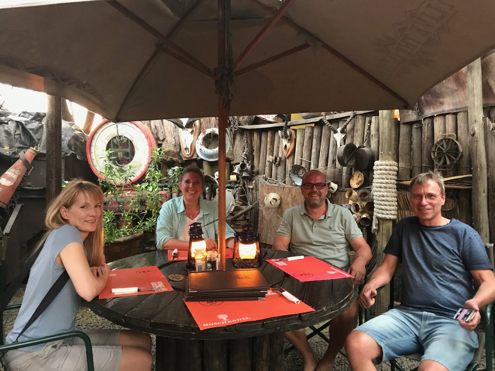

17.09.–12.10.2026 · Namibia (Süden, Küste & Norden) · Selbstfahrer-Rundreise, 23 Ü, ca. 4.315 km

Überblick
Diese Rundreise führt euch als Selbstfahrer durch den Süden, die Küste und den Norden Namibias – mit einem Tagesausflug in den Kgalagadi Transfrontier Park auf der südafrikanischen Seite (via Mata-Mata). Die Route verläuft von Windhoek über Kgalagadi, Keetmanshoop, den Fish River Canyon, Lüderitz, Solitaire, Walvis Bay und Swakopmund weiter an die Skeleton Coast (Terrace Bay), über Khowarib bis Epupa Falls an der Grenze zu Angola, und schließlich durch Etosha zurück nach Windhoek. 13 Stationen, 23 Übernachtungen, rund 4.315 km. Schwerpunkte sind Wüstenlandschaften, Wildtiere, die Geisterstadt Kolmanskop, der Köcherbaumwald sowie Wüstenelefanten und die Epupa-Wasserfälle.
Stationen
- Windhoek – Bryan's View (Anreise)
- Torgos Lodge (Kgalagadi) – Stone Chalet
- Gondwana Canyon Lodge (Fish River Canyon)
- Lüderitz – Kairos Cottage B&B
- Solitaire Roadhouse
- Walvis Bay – Kleines Nest B&B
- Swakopmund – Hotel A la Mer
- Terrace Bay Resort (Skeleton Coast)
- Khowarib Lodge
- Epupa Falls Lodge
- Okamanja Lodge
- Eldorado Lodge (Etosha)
- Windhoek – Bryan's View (Abreise)
Einreise & Gesundheit
- Visum
- Namibia: Visa on Arrival, laut Planung bereits beantragt – Status vor Abreise final bestätigen. Für den Kgalagadi-Tagesausflug (Grenzübertritt Mata-Mata nach Südafrika) reicht für deutsche Staatsangehörige bei Kurzaufenthalt ein gültiger Reisepass (mind. 30 Tage über Reiseende hinaus gültig), zusätzliches Visum nicht nötig. Grenzöffnung Mata-Mata täglich 08:00–16:30 Uhr.
- Impfungen
- Standardimpfungen auffrischen (Tetanus, Diphtherie, Polio, MMR). Empfohlen: Hepatitis A, bei Langzeitaufenthalt/besonderer Exposition auch Hepatitis B, Typhus, Meningokokken ACWY, Tollwut. Keine Pflichtimpfung bei Direkteinreise aus Deutschland; Gelbfieber-Nachweis nur bei Einreise aus/Transit durch Endemiegebiet.
- Malariaprophylaxe
- Epupa Falls/Kunene-Region: ganzjährig hohes Risiko – Prophylaxe ernsthaft mit Reisemediziner besprechen. Etosha: offiziell ganzjährig mittleres Risiko, in der Trockenzeit (entspricht dem Reisezeitraum) reduziert – Mückenschutz konsequent. Restliche Route (Windhoek, Süden, Küste inkl. Lüderitz/Swakopmund/Walvis Bay): malariafrei.
Stand der Recherche (Juli 2026) – bitte vor Reiseantritt offiziell beim Auswärtigen Amt bzw. einer reisemedizinischen Beratungsstelle bestätigen.
Windhoek – Bryan's View (Anreise)
| Adresse | Bryan O'Linn Close 1, 9000 Windhoek, Namibia (mit Buchungsbestätigung abgeglichen und bestätigt) |
|---|---|
| Zeitraum | 18.09.2026 – 19.09.2026 |
Aktivitäten
- Ankunft, Mietwagenübernahme
- Abendessen in Joe's Beerhouse, 160 Nelson Mandela Ave, Windhoek

Praktische Hinweise
Landung Windhoek 08:10 Uhr, Mietwagenübernahme direkt am Flughafen.
Private Notizen
Preis 67 €, Storno bis 03.09.2026.
🛣️ Etappe: Windhoek → Torgos Lodge (Kgalagadi)
| Strecke | 566 km |
|---|---|
| Fahrzeit | 6 Std. 15 Min. (inkl. Puffer) |
- B1 asphaltiert bis Gochas, letzter Abschnitt C15 Schotter
- Gochas (letzte Tankmöglichkeit/kleine Läden vor der Grenze)
Torgos Lodge (Kgalagadi) – Stone Chalet
| Adresse | Farm Dispute 327, C15-Straße, Karas-Region, Namibia (Mata-Mata, nahe Koës) – ca. 5–7 km vom Mata-Mata-Grenzposten, Namibia-Seite außerhalb des Parks |
|---|---|
| Zeitraum | 19.09.2026 – 23.09.2026 |
Aktivitäten
- Tagesausflüge in den Kgalagadi Transfrontier Park via Mata-Mata (Pirschfahrten, Sundowner-Fahrten laut Lodge)
- Parkeintritt ca. R512/Person/Tag
Praktische Hinweise
Grenzposten Mata-Mata täglich 08:00–16:30 Uhr geöffnet – Rückkehr aus dem Park rechtzeitig einplanen.
Reisepass für den Grenzübertritt mitführen.
Private Notizen
Gesamtpreis für 4 Ü Stone Chalet final bestätigt: 750 €.
Parkeintritt gesamt 200 €.
🛣️ Etappe: Torgos Lodge → Fish River Canyon (Gondwana Canyon Lodge), mit ca. 2 Std. Pause bei Keetmanshoop
| Strecke | 414 km gesamt (260 km Torgos Lodge–Keetmanshoop + 154 km Keetmanshoop–Fish River Canyon) |
|---|---|
| Fahrzeit | 5 Std. 15 Min. reine Fahrzeit + ca. 2 Std. Programm bei Keetmanshoop ≈ 7 Std. 15 Min. gesamt |
| Straßen | C17, dann C12 |
- Hinweis: Keetmanshoop ist reiner Zwischenstopp, keine eigene Übernachtung.
- Garas Park (Köcherbäume, ca. 20 km nördlich auf der B1) liegt für die Weiterfahrt nach Süden in die falsche Richtung und wird im 2-Std.-Fenster ausgelassen – das Köcherbaum-Motiv gibt es mit Gariganus ohnehin schon.
- Bei ca. 7 Std. 15 Min. Gesamtdauer für diesen Tag: spätestens um 7 Uhr ab Torgos Lodge starten, dann Ankunft am Fish River Canyon noch vor 15:00 Uhr, deutlich vor Einbruch der Dämmerung.
- Programm für die ca. 2 Std. bei Keetmanshoop (Start ca. 14 km vor der Stadt, kommend von
Torgos Lodge auf der C17):
- 0:00–0:10: Abzweig Gariganus-Farm an der C17 (ca. 14 km vor Keetmanshoop), Permit an der Rezeption kaufen (deckt Quiver Tree Forest & Giant's Playground ab, ca. N$110–130 p. P.)
- 0:10–0:40: Quiver Tree Forest – markierter Rundweg (ca. 20–30 Min.), teils 200–300 Jahre alte Köcherbäume zwischen dunklen Dolerit-Felsen
- 0:40–0:50: Weiterfahrt zum Giant's Playground (ca. 5 km Schotter, ca. 10 Min.)
- 0:50–1:20: Giant's Playground – Rundweg durch die Felsformationen (ca. 30 Min.); Markierung ist laut mehreren Berichten stellenweise lückig – auf dem rechtsdrehenden Hauptpfad bleiben, nicht auf eigene Faust abkürzen
- 1:20–1:35: Rückfahrt zur C17 und weiter nach Keetmanshoop (ca. 14 km, ca. 15 Min.)
- 1:35–1:55: Kurzer Stopp im Ortszentrum Keetmanshoop – Alte Kaiserliche Post (heute Museum) und/oder Rheinische Missionskirche, dazu tanken und Vorräte auffüllen (letzte größere Versorgungsmöglichkeit vor dem Fish River Canyon)
- 1:55–2:00: Weiterfahrt nach Süden auf der C12 zum Fish River Canyon
- Praktischer Hinweis: Beste Lichtstimmung am Quiver Tree Forest wäre eigentlich Sonnenuntergang – passt aber nicht in dieses Tagesprogramm. Auch am Vormittag/Mittag ist der Ort sehenswert, nur die Fotos werden weniger golden.
Gondwana Canyon Lodge (Fish River Canyon)
| Adresse | Gondwana Canyon Park, ca. 20 km östlich des Fish River Canyon, Zufahrt über C37, Karas-Region, Namibia – keine Straßenadresse (abgelegene Lodge) |
|---|---|
| Zeitraum | 23.09.2026 – 24.09.2026 |
Aktivitäten
- Hobas-Hauptaussichtspunkt (Hell's Bend), ca. 20 km von der Lodge – Parktor schließt bei Sonnenuntergang, rechtzeitig zurückfahren
Private Notizen
Preis 308,15 €, 2 Zimmer gebucht von Kerstin, Storno bis 23.08.2026.
Zahlung komplett 616,33 € (Barclay 22.12.25, 50 % Silke/Wolle).
🛣️ Etappe: Fish River Canyon → Lüderitz
| Strecke | 425 km |
|---|---|
| Fahrzeit | 4 Std. 30 Min. (Straße C12/B4) |
- C12 Schotter, letzter Abschnitt B4 asphaltiert
- Wildpferde von Garub (ca. 20 km hinter Aus an der B4, Schotter-Zufahrt, mit normalem Auto befahrbar, kostenlos, Beobachtungsstand mit Schattendach)
Lüderitz – Kairos Cottage B&B
| Adresse | Kreplin Street, Shark Island, 9000 Lüderitz, Karas-Region, Namibia |
|---|---|
| Zeitraum | 24.09.2026 – 26.09.2026 |
Aktivitäten
- Kolmanskop (Geisterstadt, 12 km/15 Min. vor Lüderitz)
- Diaz Point (ca. 10 km, historisches Kreuz & Robbenkolonie)
Praktische Hinweise
Kolmanskop bis 10:00 Uhr oder ab 15:00 Uhr besuchen – nachmittags oft windig, daher lieber morgens.
Private Notizen
Preis 143,36 €, Storno bis 24.08.2026.
🛣️ Etappe: Lüderitz → Solitaire
| Strecke | 338 km |
|---|---|
| Fahrzeit | 6 Std. 50 Min. (inkl. Puffer) |
- Erhöhte Aufmerksamkeit: die Fahrzeit ist für die Distanz ungewöhnlich lang, deutet auf schlechteren Untergrund hin
- Schloss Duwisib (Abstecher)
Solitaire Roadhouse
| Adresse | Solitaire Village, C14-Straße (Solitaire Farm Portion 2 Nr. 412), 9000 Solitaire, Namibia |
|---|---|
| Zeitraum | 26.09.2026 – 27.09.2026 |
Private Notizen
Preis 119 €, Storno bis 26.08.2026.
🛣️ Etappe: Solitaire → Walvis Bay
| Strecke | 233 km |
|---|---|
| Fahrzeit | 3 Std. |
Walvis Bay – Kleines Nest B&B
| Adresse | 36 Esplanade, Walvis Bay, Namibia |
|---|---|
| Zeitraum | 27.09.2026 – 29.09.2026 |
Aktivitäten
- 27.09. (Anreisetag): entspannter Sunset an der Lagune/Waterfront, an einem der "Bird Viewpoints" entlang der Promenade – nah an der Unterkunft, kein Sand-Fahren nötig
- 28.09., 08:30 Uhr: gebuchte Halbtagestour Sandwich Harbour (geführt, nicht selbst fahren – Gezeiten-abhängige Strandpassage und steile Dünenflanken erfordern ortskundige Guides)
- 28.09. nach der Tour (nachmittags/abends): Düne mit Meerblick bei Langstrand/Dolphin Beach – Auto nur bis zu einem sicheren Zugang/Abstellpunkt fahren, für den Meerblick zu Fuß auf die Dünenkante hochlaufen statt in weichen Sand reinzufahren; Ankunft ca. 60–75 Min. vor Sonnenuntergang
- Flamingo-Beobachtung an der Lagune (ganzjährig möglich, Hauptsaison Nov.–Apr.)
- Dune 7 (höchste leicht zugängliche Düne der Region, sehr nah an der Stadt) – falls an einem der beiden Tage noch Zeit ist
Praktische Hinweise
Sandwich-Harbour-Tour: geführte Tour, kein Selbstfahren, auch nicht mit Permit.
Langstrand/Dolphin Beach: nur auf bestehenden Spuren/zugelassenen Zufahrten bleiben (Dünengürtel zwischen Walvis Bay und Langstrand – Fahrzeuge außerhalb markierter Wege benötigen ein gesondertes Off-Road-Permit); Auto so abstellen, dass ihr ohne Rangieren wieder rauskommt; spätestens in der Dämmerung auf dem Rückweg sein.
Nach der Sandwich-Harbour-Tour die Abendtour zur Düne bewusst kurz halten (Ermüdung nach der mehrstündigen 4x4-Fahrt am Vormittag einplanen).
Küstennebel ist an dieser Küste normal – Sunset wird dann weicher/pastellig, bleibt aber fotogen.
Abendessen mit Sunset: The Raft (Esplanade, direkt an der Lagune, wenige Schritte von der Unterkunft) oder Anchors @ the Jetty (Atlantic Street/Waterfront) – beide 2026 bestätigt geöffnet, Reservierung mit Fensterplatz/Lagunenblick empfehlenswert, ca. 45–60 Min. vor Sonnenuntergang starten.
Private Notizen
Preis 113 €, 2 Zimmer gebucht von Kerstin, Storno bis 19.09.2026.
🛣️ Etappe: Walvis Bay → Swakopmund
| Strecke | 35 km |
|---|---|
| Fahrzeit | 30 Min. |
- Flamingo-Beobachtung (ganzjährig, Hauptsaison Nov.–Apr.)
Swakopmund – Hotel A la Mer
| Adresse | 4 Libertina Amathila Avenue, 9000 Swakopmund, Namibia |
|---|---|
| Zeitraum | 29.09.2026 – 30.09.2026 |
Aktivitäten
- Stadtbummel zu Fuß (kompakte Route, ca. 2–2,5 km, spontan/flexibel):
- Trendhaus – Kunsthandwerk, Deko, Teppiche
- Die Muschel Book & Art Shop – Bücher, Kunst, kleines Café direkt dabei
- Bojos Café – Mittagspause, gutes WLAN
- Woermannhaus – historisches Wahrzeichen, Fotostopp
- Swakopmund Open Craft Market – Souvenirs, Verhandeln gehört dazu
- The Jetty – Sonnenuntergang direkt am Wasser
- Abendessen im The Tug (direkt im Anschluss an die Jetty)
Praktische Hinweise
Die Route ist bewusst ohne feste Uhrzeiten geplant – nur der Tisch im The Tug sollte vorab reserviert werden, der Rest bleibt spontan. Trendhaus hat eingeschränkte Öffnungszeiten (Sa nur bis 13 Uhr, So geschlossen) – bei Ankunft an einem Sonntag diesen Stopp einfach auslassen und direkt bei der Muschel/Bojos weitermachen.
The Tug (A. Schad Promenade/Molen Road, Jetty-Bereich): 2026 bestätigt geöffnet Mo–Sa 17:00–22:00, So 12:00–22:00.
Private Notizen
Preis 117,37 €, Storno bis 07.09.2026.
🛣️ Etappe: Swakopmund → Terrace Bay (Skeleton Coast)
| Strecke | 365 km |
|---|---|
| Fahrzeit | 4 Std. 30 Min. |
- Salzstraße entlang der Küste
- Schiffswrack "Die Zeila" (1 Std. 10/90 km, kurz vor Henties Bay)
- Seelöwenkolonie Cape Cross (2 Std./160 km)
- Ugabmund Gate – Eingang Skeleton Coast NP (2 Std. 40/230 km)
- Verlassene Ölbohrplattform (3 Std. 15/275 km)
Terrace Bay Resort (Skeleton Coast)
| Adresse | Terrace Bay, Skeleton Coast National Park, Kunene-Region, Namibia – keine Straßenadresse, nur über die Parktore erreichbar (Park geöffnet 08:00–18:00 Uhr) |
|---|---|
| Zeitraum | 30.09.2026 – 01.10.2026 |
Aktivitäten
- Skeleton-Coast-Highlights auf der Anfahrt (siehe Etappe Swakopmund → Terrace Bay)
Private Notizen
Preis für 2 Zimmer 280 €, gebucht von Kerstin.
Anzahlung Barclay 18.11.2025: 110,77 €; Restzahlung Trade 14.07.2026: 176,77 € (davon 50 % Silke/Wolle).
🛣️ Etappe: Terrace Bay → Khowarib Lodge
| Strecke | 270 km |
|---|---|
| Fahrzeit | 4 Std. 15 Min. |
Khowarib Lodge
| Adresse | D3706, westlich der Khowarib-Siedlung, ca. 30 km von Sesfontein, Kunene-Region, Namibia |
|---|---|
| Zeitraum | 01.10.2026 – 04.10.2026 |
Aktivitäten
- Geführte Tagestour zu den Wüstenelefanten
- Tagestour Damaraland
Private Notizen
Preis 323,30 €, Storno bis 01.08.2026.
🛣️ Etappe: Khowarib Lodge → Epupa Falls Lodge (Kunene-Grenze)
| Strecke | 380 km |
|---|---|
| Fahrzeit | 6 Std. |
- Abgelegene Region, teils sandige/steinige Abschnitte
- Fahrzeit unbedingt einplanen, keine Fahrten in der Dämmerung wegen Wildwechsel
Epupa Falls Lodge
| Adresse | Epupa, 9000 Epupa, am Kunene-Fluss, Grenzfluss zu Angola, ca. 3 Std. Fahrt von Opuwo (Kreuzung C43/C41) |
|---|---|
| Zeitraum | 04.10.2026 – 06.10.2026 |
Aktivitäten
- Epupa Falls – mehrere Aussichtspunkte entlang der Kaskaden, zu Fuß von der Lodge erreichbar, gerahmt von Baobabs & Makalani-Palmen
- Geführter Himba-Dorfbesuch (am besten über die Lodge organisiert, mit ortskundigem Guide)
- Geführte Krokodilbeobachtung am Kunene-Ufer
- Optional je nach Lodge: Vogelbeobachtung, geführte Wanderungen, saisonales Rafting/Kajak (Saison Mai–Nov., passt noch in euren Reisezeitraum)
Praktische Hinweise
Region mit ganzjährig hohem Malariarisiko – Mückenschutz und ggf. Prophylaxe beachten (siehe Abschnitt Einreise & Gesundheit).
Im Kunene-Fluss leben Krokodile – nicht schwimmen, nur an von der Lodge freigegebenen Stellen ans Ufer.
Private Notizen
Preis 350 €, angezahlt 87,92 €, Storno bis 03.09.2026 (Kerstin, Trade 15.11.2025).
🛣️ Etappe: Epupa Falls → Okamanja Lodge (Richtung Etosha, Galton Gate West)
| Strecke | 423 km |
|---|---|
| Fahrzeit | 5 Std. 10 Min. |
Okamanja Lodge
| Adresse | Okamanja Lodge, 10000, Kamanjab direkt auf der C35 |
|---|---|
| Zeitraum | 06.10.2026 – 07.10.2026 |
Praktische Hinweise
Liegt 52 km, ca. 1 Std. Fahrt südlich vom Galton Gate.
Private Notizen
Preis 65 €, 2 Zimmer gebucht von Kerstin, Storno bis 19.09.2026.
🛣️ Etappe: Okamanja Lodge → Eldorado Lodge (Galton Gate rein, Anderson Gate raus)
| Strecke | ca. 270 km |
|---|---|
| Fahrzeit | ca. 4 Std. 30 Min. (reine Fahrzeit, ohne Stopps) |
- Westteil (Galton Gate/C35) abgelegen und wenig befahren, häufiger Wildwechsel im gesamten Park, Geschwindigkeit anpassen
- Wichtig: Torschluss Anderson Gate im Oktober 19:00 Uhr – Puffer einplanen, spätestens gegen 10:00 Uhr bei Okamanja Lodge losfahren
- Abandoned Elephant Abattoir – Informationszentrum zur Geschichte des damaligen Tier-Managements
- Olifantsrus Wasserloch
- Sonderkop-Waterhole
- Ozonjuitji m'Bari Wasserloch
- Okaukuejo (Wasserloch-Beobachtung)
Eldorado Lodge (Etosha)
| Adresse | Farm Eldorado, ca. 8 km südlich des Anderson Gate, Ombika/Okaukuejo, Etosha-Region, Namibia – keine Straßenadresse (Familienfarm) |
|---|---|
| Zeitraum | 07.10.2026 – 10.10.2026 |
Aktivitäten
- Pirschfahrten im Etosha Nationalpark
Private Notizen
Preis 865,31 €, Storno bis 06.09.2026 (Kerstin, Trade 12.11.2025).
🛣️ Etappe: Eldorado Lodge → Windhoek
| Strecke | 440 km |
|---|---|
| Fahrzeit | 4 Std. 30 Min. (Straße B1) |
Windhoek – Bryan's View (Abreise)
| Adresse | Bryan O'Linn Close 1, 9000 Windhoek, Namibia |
|---|---|
| Zeitraum | 10.10.2026 – 11.10.2026 |
Aktivitäten
- Abendessen in Joe's Beerhouse, 160 Nelson Mandela Ave, Windhoek
Praktische Hinweise
Rückflug am 11.10.2026, 19:15 Uhr; Landung Frankfurt 12.10.2026, 05:25 Uhr.
Private Notizen
Preis 68,04 €, Storno bis 25.09.2026.
Kommentare
Hier könntet ihr während der Reise eure Gedanken dalassen: